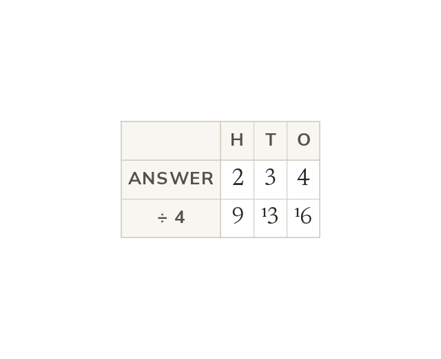
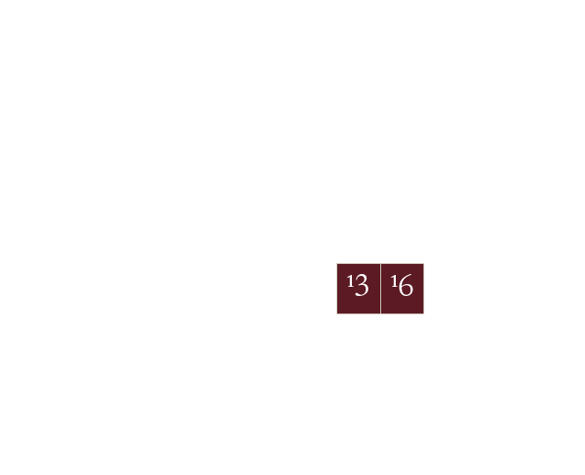

Division is the inverse, and does not work in any order
Division undoes multiplication. Order matters: and are not the same. Short division carries each remainder into the next digit, as in
Division undoes multiplication, but and are not the same. Short division splits the number being divided by place value, carrying any remainder into the next digit.